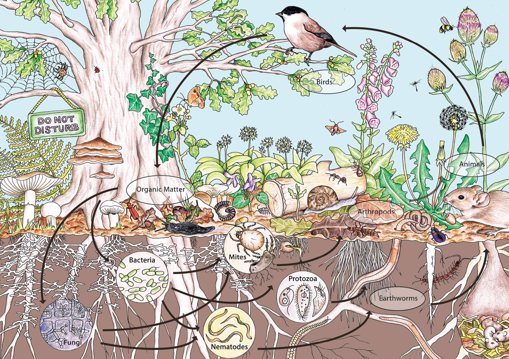
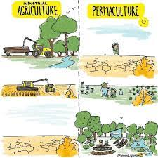
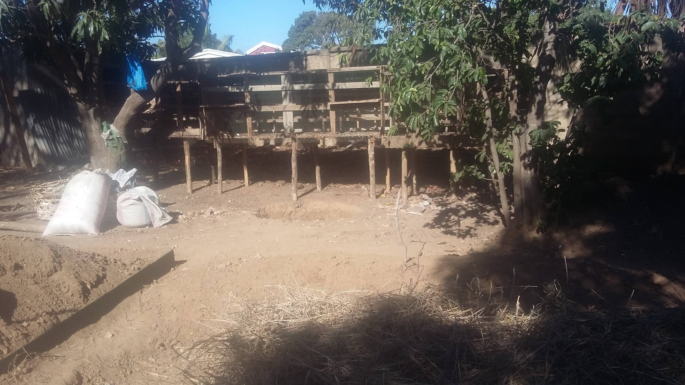
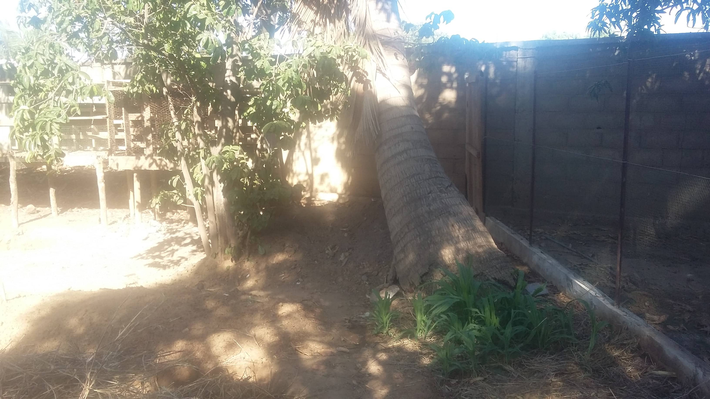
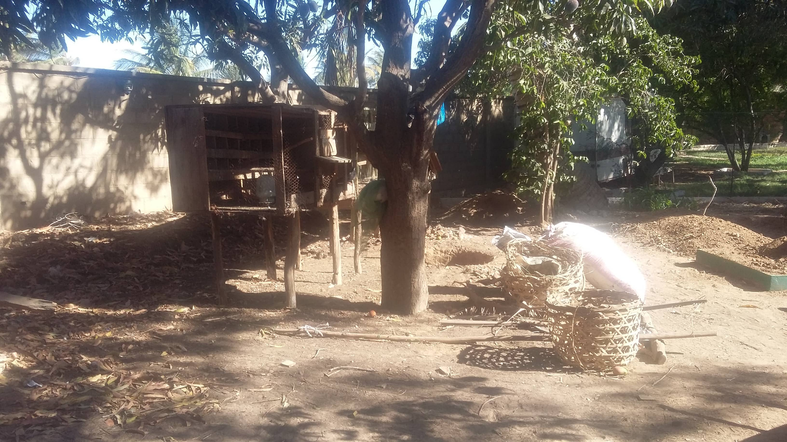
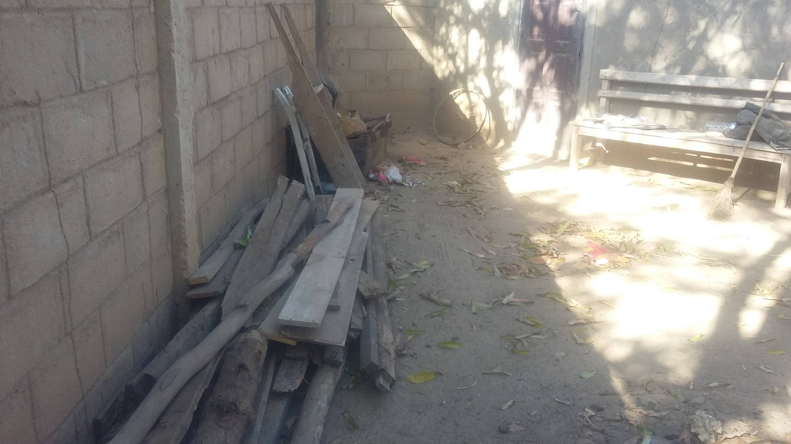
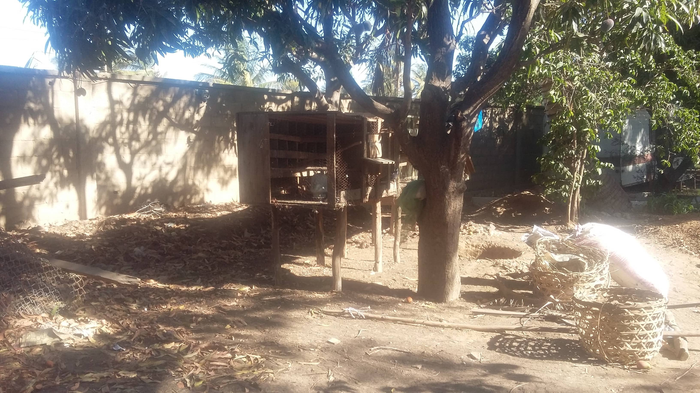
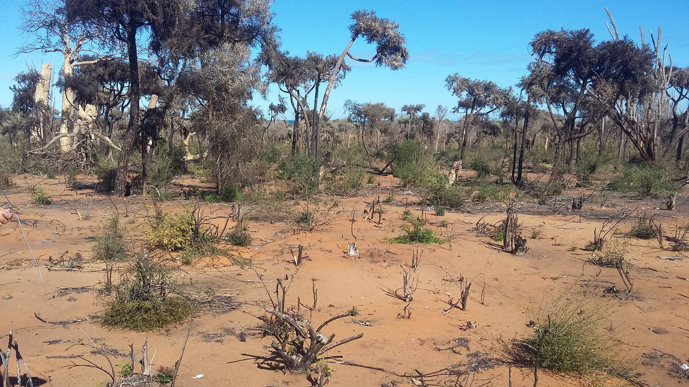
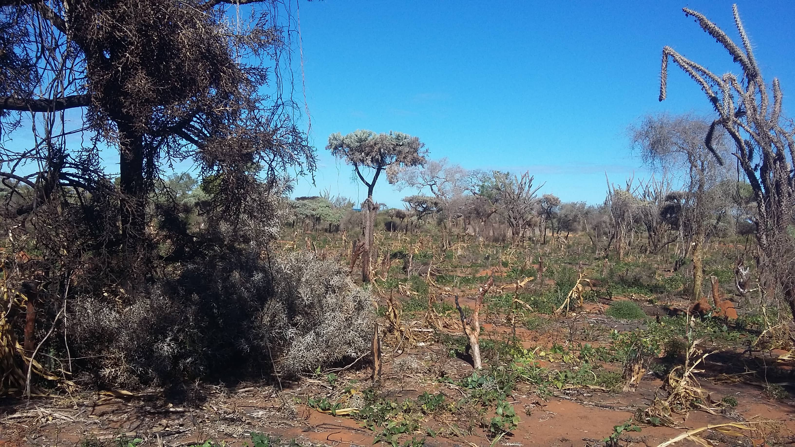
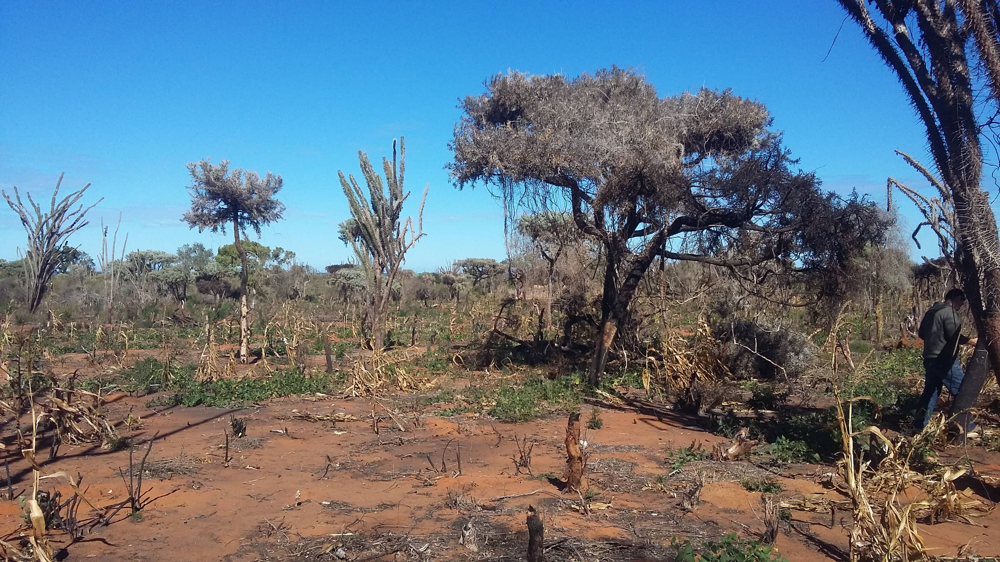

La permaculture : c'est quoi ?
La permaculture a été théorisée par un biologiste, Bill Mollison, et un essayiste, David Holmgren.
Leur concept est inspiré d’un agriculteur japonais du nom de Masanobu Fukuoka. D’après la définition de Larousse, la permaculture est « un mode d’agriculture fondé sur les principes de développement durable, se voulant respectueux de la biodiversité et de l’humain et consistant à imiter le fonctionnement des écosystèmes naturels. »
La permaculture est donc une conception qui se base sur l’observation de la nature afin de reproduire ses modèles et ses relations. Cependant, cette définition ne s’attarde que sur la définition étymologique de la permaculture, terme né de l’association des mots « permanente » et « agriculture ».
Notre action
Notre objectif est d'apprendre, à un groupe d'agriculteurs volontaires, une autre façon de cultiver en respectant la biodiversité. La pratique de ces techniques demande beaucoup moins d'efforts et de besoin financier.
Le labour, la monoculture, les vergers d'un côté et le jardin potager de l'autre côté sont des techniques apparues dans les années 1960 pendant la révolution Verte.
Les techniques de permaculture démontrent que nous pouvons tout mélanger : maraichage, arbres fruitiers, arbres d'ornement et fleurs pour maintenir un micro climat, et une biodiversité. Cette dernière favorise et protège les cultures.
Secteur Géographique
Nous avons choisi Madagascar et plus exactement le sud du pays. Le climat est rude, il y a une desertification qui s'y installe avec une déforestation importante.

Notre association Sakafo Ny Ala siginifie : la fôret qui donne de la nourriture. Celle-ci a pour but d'apprendre les techniques de base de la permaculture : observer le terrain et les signes, soigner les cultures par des macérations d'herbes et de feuilles sans pesticides, zéro fongicides et bien d'autres actions...

Cependant, en zone aride et tropicale, les techniques permaculturale doivent être adaptées. Pour démontrer nos méthodes, nous avons décidé de créer deux zones d'expérimentation sur deux lieux distincts. Les deux terrains étaient à la base sans aucun entretiens et semi-aride :
- - Un test en zone urbaine sur un terrain dans la ville de Toliara.
-






- - Un test en zone extra-urbaine sur un terrain dans la ville de Ambolimailaky.
-


